我们已经学习了在市场走出熊市时，采用日线及周线的移动平均线作为盈利目标的卖出方法，之后，当牛市确立时，这种方法却不常用到。随着价格逐步走高，价格通常高于移动平均线，所以采用移动平均线卖出就不是个好方法了。
在寻找合适的盈利目标位之前，我们先看图4-9，这是一种重要的价格运动模式。从技术分析看，图中看跌信号非常强烈：价格和周线MACD柱的顶背离。A点之后，MACD柱一度低于0，表示牛市正在结束，之后股价创出新高到达B点，但MACD柱却比之前的要低，并且很平滑，这是强烈的见顶信号；同时强力指标也确认了这个信号，价格创出新高，强力指标出现顶背离，MACD线完全走平。
从图4-10的日线图中我们看到价格的短期运动趋势，在这样的上升趋势中交易股票就是重复地在价值区买入，在高于上轨时卖出，这时感觉市场就像取款机一样。事实上，我不愿使用这样的比喻，因为市场绝对不会像取款机那么简单。这种重复模式非常稳定，这种模式下，交易者绝好的盈利目标就是在价格运行到上轨之上时。
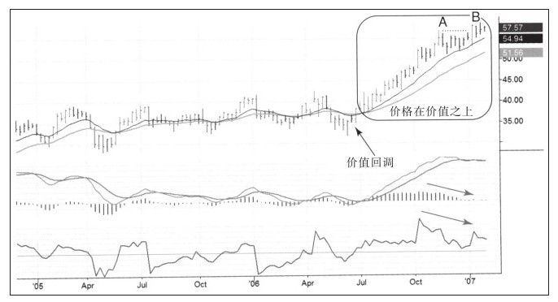
如果用移动平均线定义价值，那么定义价格的超买或超卖区的理想指标就是通道。理想状况下，我们希望在低于价值时买入，并在通道附近设置一个超买水平。因为每次都要对交易进行评分，所以交易时尽量逢低买入，这样才有可能得到30%以上的评分。
在一次月度在线研讨会上，杰夫·帕克建议大家关注CEGE（见图4-11）。我每月要参加一次月度在线研讨会，每次会议由相隔一周的两个会期组成，众多交易者在虚拟房间聚首，回顾市场并讨论股票。有些人带着他们精挑细选的股票供大家讨论，如果我对某只股票很感兴趣，就宣布转天可能会交易这只股票，而CEGE就是这样一个案例。
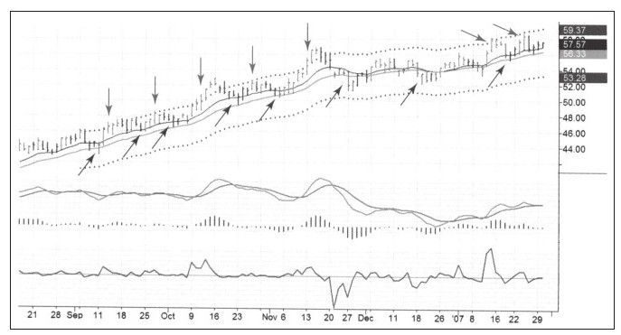
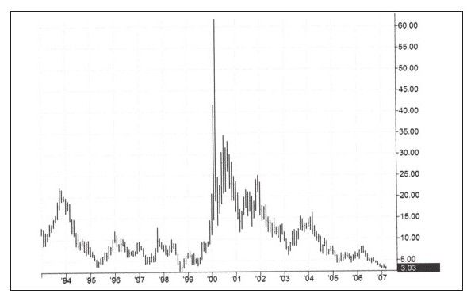
图4-11是CEGE的周线压缩图，从图中可以看到股价在20世纪90年代的牛市中达到过60美元，然后崩跌，期间虽然不断有反弹，但还是在最近跌到了3美元附近。从牛市的最高点到现在跌幅超过95%，我把跌幅超过90%的股票叫做“跌落的天使”，并经常在这些股票中寻找候选交易品种。
从图4-12和图4-13中可以看到我买入CEGE的入场点。
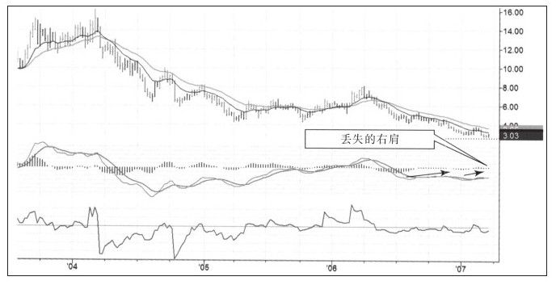
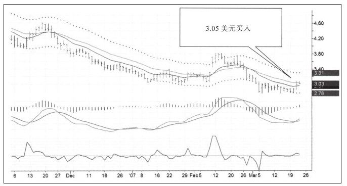
随后一周的在线会议上，我们又重新讨论了CEGE，杰夫说这只股票已经严重超买，价格在通道上轨附近已经震荡两天了，MACD柱也处于超买状态。因为当时我已经持有很多多头头寸，所以我决定转天卖出CEGE以降低仓位（见图4-14）。
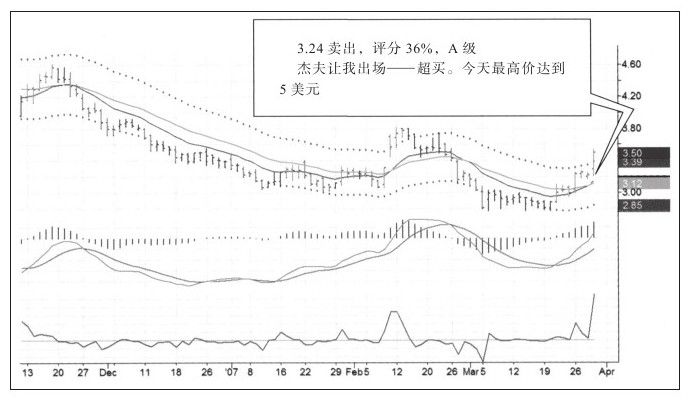
我的出场评分只有6%，在我卖出后股价迅速上升。这次交易做得不好，但谁又能在每次交易中都获得高分呢？要知道，最重要的是保持平均分大于50%。这次交易总评分36%，A级。
在我卖出后，杰夫说他真想敲他自己，因为卖得太早（见图4-15）。我准备幽他一默说：提早卖出提早从压力中解放出来，要不然还要决定在这么疯狂的趋势中何时了结头寸呢。但是，坦白来说，这次交易给我们好好地上了一课。
首先，坚定止盈目标非常重要。其次，不必为错失的利润惩罚自己，否则只会让你在未来的交易之路上胆大妄为。我对杰夫说，你应该为找到这样好的股票而庆祝，如果一直都能买到好股票，它们迟早会让你大发其财。
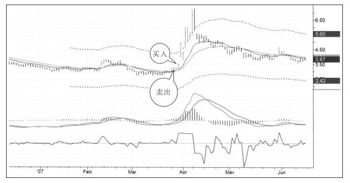
从图4-15中我们可以看到后续跟踪图中通道变宽了。交易程序能根据最新价自动计算通道的宽度并把它们画出来，如果价格波幅加剧，通道就会变宽，因此目标盈利价格是不固定的，目标价格总是变动让交易这个游戏变得有些困难。虽然今天我确定了目标价格，但是几天后，目标价格却变了。
CEGE在暴涨后又回到了窄幅震荡的格局，而且又跌回到我和杰夫曾经买入的价格，价格似乎又有买入的吸引力了。
好运来临时多数人想要的更多——大房子、好车甚至新配偶。我记得在一次聚会上聊天时被一对夫妇缠着不能离开，丈夫刚刚升职，妻子就想“升级我们的关系”。铺天盖地的广告让人们奢求更多，有些人毕生都在奢求各种东西，就像笼子里总想咬住自己尾巴的动物一样，这种无尽的追求有时会让人丧失人性。
把这种心态带入交易中，人们就想赚得更多。即便是盈利的交易也不会给他们带来快乐，他们为没有在最低点买入或在最高点卖出而恼羞成怒，这种行为都是在追求不义之财。这种怨恨让他们买得过早而卖得过晚。如果一直都想赚得更多，那么交易者的表现一定比我们这些跟随正确方法的人差。
市场能给予的就那么多，如果想要的更多，必然适得其反。
人生也是交易中最重要的词就是“知足”，你必须决定赚多少才能让你快乐，并据此设定目标，目标会让你的贪婪得到控制。要求太多的人，就成了贪婪和物欲的奴隶，而决定多少就知足的人，会获得自由。
不要误解我的意思，我不是在宣扬贫穷，恰恰相反，我和其他人一样都想乘坐公务舱、住漂亮房子、开豪车，我的意思是，找到让你感到满足的那条线，当达到那条线时你会觉得很开心。这比那种心态不平衡、病态地追求更多的人要好得多。反过来想，如果获得一笔意外之财你会怎么样？如果整月你都做对并赚了很多钱，那该怎样？获得巨大利润的经历让多数人精神错乱、追求更多，他们不断冒险以致风险失控，直到巨大的盈利变成巨大的亏损才如梦方醒。为了保持冷静，你需要做一个利润管理计划——我们会在后面的章节中再次讨论这个问题。
那些总想赚更多的交易者，在接近通道上轨时卖出是很有压力的。我的部分交易是在没有达到盈利目标时卖出，部分交易是在高于盈利目标时卖出。
在学习过程中，应当动态地看待通道这个铁一般的盈利目标设定工具。如果市场转弱，接受比原先预期少的利润无可厚非，不是每次价格都能刚好运行到上轨之上。交易EXTR那次卖出时和上轨价差一点，交易黄金那一次差得很大，但我从两次交易中都获得了可观的利润。有意思的是，愿意接受较少的利润的人往往最终能获得更多。见图4-16和图4-17的交易案例。
对于贪婪的交易者来说，强烈的价格运动在超过盈利目标时会给他们带来很大压力。一个人在获利出场后，看着价格继续前行他会气得敲自己头并最终迷失自我。
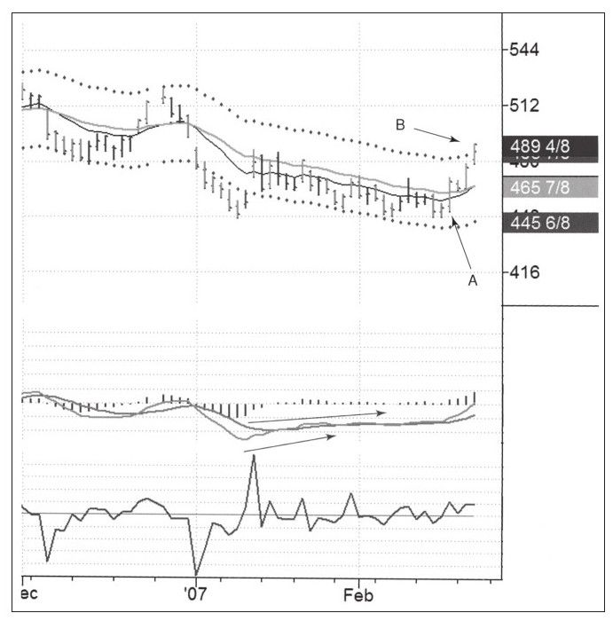
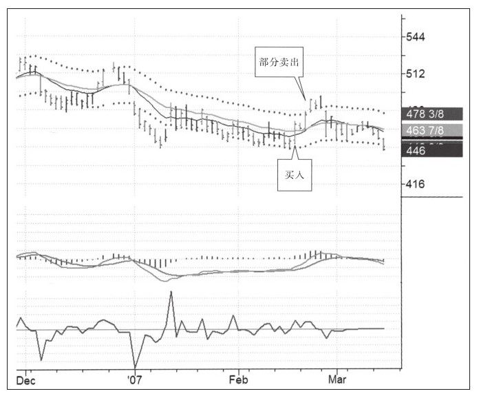
我们再看另外一则交易案例（见图4-18和图4-19）。2007年1月我基于糖的周线图走势而强烈看多，并在2007年3月份买入，最终在5月份完成交易并取得了不错的利润。
很幸运我们能找到价格反转后持续在通道之上运行的案例，但价格怎么运行其实并不是我要说的重点。我要说的是“知足”好于“奢求更多”。知足的心态会让你保持冷静和自控，而这样的感受会在未来的交易中引导你获取更多利润。
我也不是所有的交易都成功，有些亏了钱，还有一些比如前面讲的利润回吐。当出现这样的错误时，我不会惩罚自己。我用交易日记分析期间发生了什么，并从错误中学到尽可能多的知识，我接受自己的不完美，只要能从交易中学到东西，就是一次富有成效的经历。
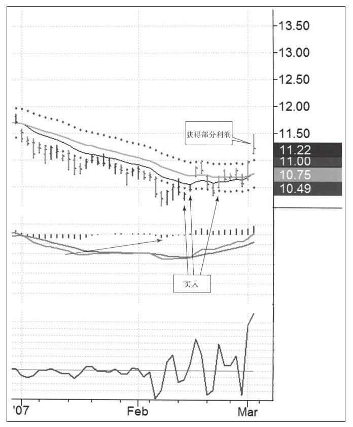
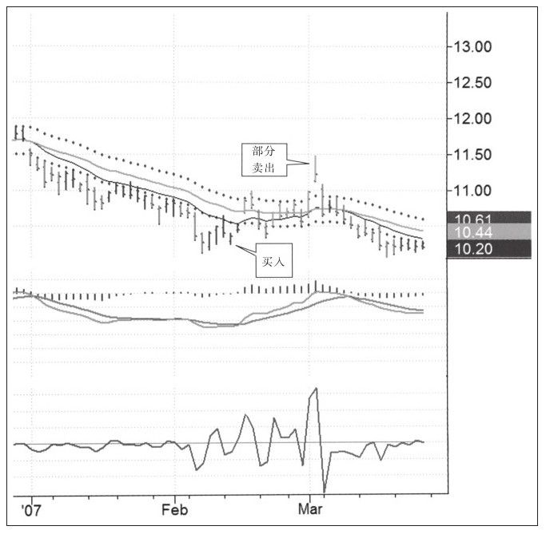